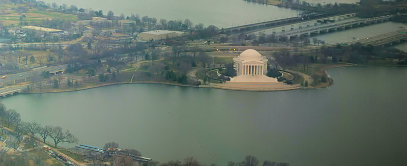
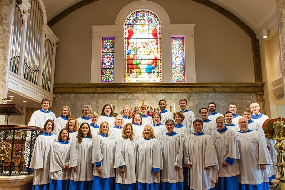

Katherine McClintic
Hometown: Washington, DC
This is a picture of the Jefferson Memorial that I took from the top of the Washington Monument a few years ago. An earthquake closed the Washington Monument for a few years but it has recently re-opened. Perhaps surprisingly, I have only been up it once and that was only because a friend was visiting from England.
Interests
Baseball

Don't interrupt me during a Nats game, it won't be pretty. :)
Music

Singing to it, listening to it, playing it--I like it all. Unfortunately I don't know how to play too many musical instruments (or at least how to play them well). I'm fourth from the left in the top row of the above picture.
Travelling

I don't get to travel very much, but I love to do it. I took the above picture of a minke whale in Nova Scotia, off the coast of Cape Breton near Pleasant Bay. A few places that I really want to visit are: New Orleans, Croatia, and San Francisco.
Educational History, starting with most recent
- The George Washington University, M.Ed. Secondary Education (Social Studies)
- The University of Vermont, B.A. European Studies
Other Sites I Like
Contact Me
Phone: 202-689-5283
Email: kdmcclin@gmail.com